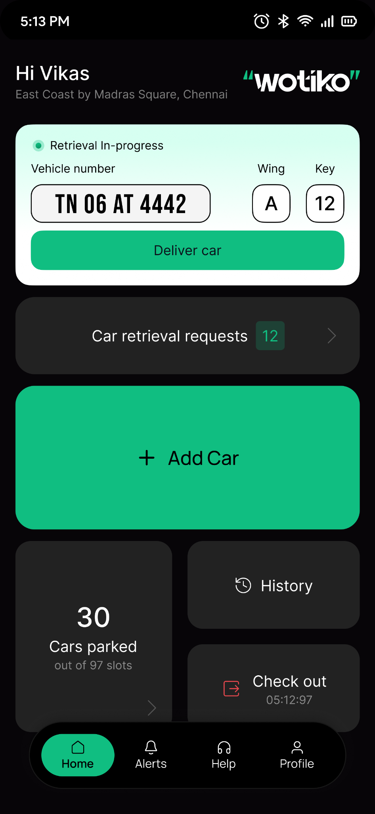
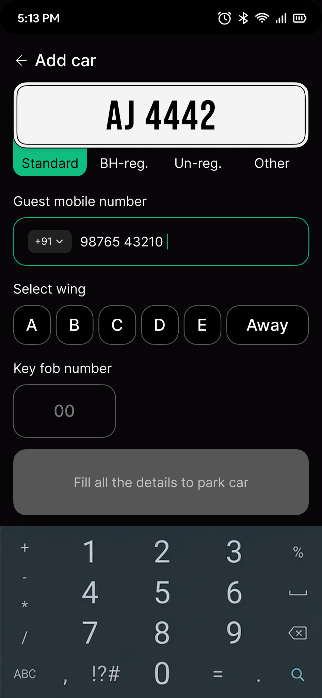
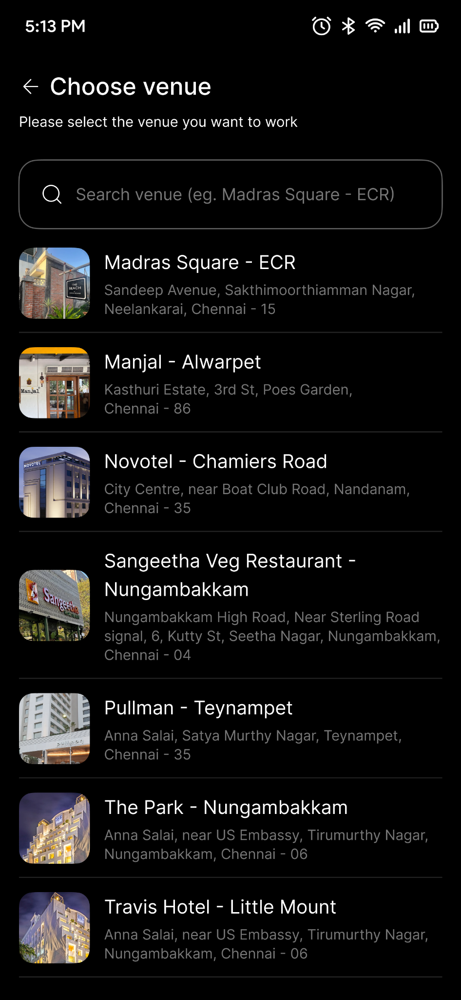

Less waiting
Reduce the moments where guests are left wondering what happens next.
Predictive hospitality infrastructure
After Mayfifth is a parent company building infrastructure for hospitality moments that need better timing, cleaner coordination, and less friction.
Waiting is for public transport,
not for your own car.
Less waiting
Smoother concierge
Better flow
Approach
The wait at the exit. The follow-up at the desk. The handoff at the portico.
We build infrastructure that helps these moments feel calmer, faster, and better coordinated.
Focus
Reduce the moments where guests are left wondering what happens next.
Give teams clearer signals so service feels less reactive.
Connect movement, people, and service into one calmer operating rhythm.
The operating philosophy
Inspired by Alfred Pennyworth from Batman: calm in chaos, precise in service, and never louder than the moment needs.
A hospitality system should not attract attention. It should make guests feel understood.
LYRA is the intelligence we are building toward. It learns rhythm, pressure points, and timing so hospitality can anticipate instead of react.
First solution
Wotiko begins with the visible pain point of hospitality arrival and departure: vehicle handoffs.
Explore Wotiko


Vehicle requests, add-car flow, venue selection, and concierge movement in one calm operating surface.
People
Founder, investors, and mentors bringing experience across technology, product, operations,
governance,
AI,and growth.
Investors
Serial entrepreneur, investor, advisor, and technologist with experience across enterprise data, deep tech, government programs, workspace management, and workforce solutions.
Investing as Kakarla Family Trust. Entrepreneur, engineer, and advisor with experience across product building, technology leadership, governance, and startup ecosystems.
Mentors
Founder of AIDVICE, President of the Applied AI Association India Chapter, board member, keynote speaker, and enterprise leader across AI and stakeholder management.
Technology advisory leader across AI, software engineering, cloud transformation, product development, and enterprise platforms.
Founder
Abhinay is the founder of After Mayfifth and Creativano. His work sits between design, communication, and customer experience, with a simple belief: good systems should make real-world service feel a little better.
Before building companies, he worked at Apple and Pret A Manger in the United Kingdom, where everyday service became the real classroom. After Mayfifth brings that learning into hospitality infrastructure.
Next
The ambition is a smoother hospitality ecosystem, built with care and restraint.